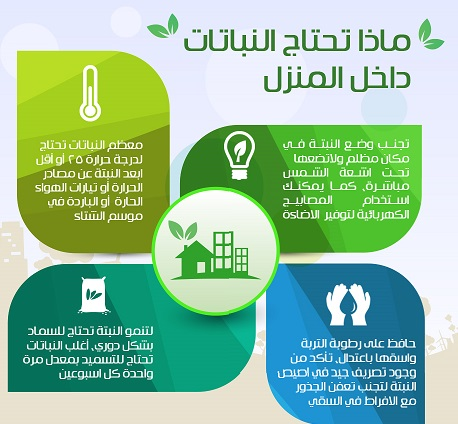
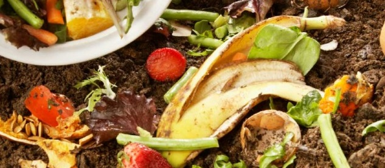
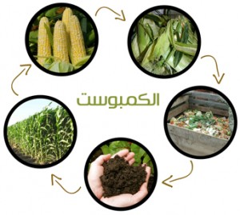

منزلك خطوة ..بـخطوة


-
الرعايه العامه للنباتات المنزليه

سنتكلم هنا ايضا عن الرعايه والتسميد العضوي للنبات

البيتموس
هو تربة عضوية تكونت من تحلل (تفكك) بطيء لطحلب يسمى سفاجنم Sphagnum يعيش في المستنقعات، وأكثر تواجد له في شمال أوروبا، وهذا النوع من السماد فقير جداً بالمغذيات ويمكن اعتباره مجرد بيئة نمو للنبات ويستخدم ممزوجاً مع أنواع أخرى من التربة لمميزاته التي منها:
1- مفكك خفيف الوزن وهذا يعني تهوية جيدة للتربة.
2- ذو قوام إسفنجي مما يعني قدرته على الاحتفاظ بكمية من الرطوبة وهذا مهم للنبات ومما يجب الانتباه له عدم ترك هذه التربة تجف تماماً لأنه يصعب جداً امتصاصه للماء بعد الجفاف فيفقد هذه الميزة.
3- معقم حيث لا يحتوي على طفيليات أو أمراض عموماً.
4- فيه شيء من الحمضية وهذا ما تحبه النباتات المنزلية عامة.
5- عندما يضاف لمزيج التربة يساعد على تهويتها ورطوبتها وعدم تماسك جزئياتها.
لذلك فإنه يستخدم لتحضير تربة زراعية جيدة بخلطه بسهولة مع مكونات أخرى، وأحياناً يسمى الخُثْ أو التُرْب.
الكمبوست

السماد البلدي
وهذا غني عن التعريف حيث أنه من مصادر حيوانية من مخلفات الأبقار أو الغنم أو الأرانب أو الطيور أو غيرها من الحيوانات، ومشكلة هذا النوع عدم اتزان المواد المغذية فيه، ورائحته كريهة، وقد لا يكون متحللاً بالكامل، وملوث بشدة بالميكروبات والأعشاب غير المرغوبة وقد يحتوي على طفيليات كالديدان والحشرات المختلفة؛ لذلك لا يستخدم بحالته النقية إلا بإحدى طريقتين:
1- يؤخذ جزء بسيط منه ويخلط مع التربة بعد تعقيمه بالتخمير البطيء أو بتعريضه للحرارة التي تقتل الطفيليات فيه.
2- يخمر لفترة طويلة في حفر خاصة وذلك بجمعه فيها وإضافة الماء إليه وتغطيته بغطاء بلاستيكي كالمستعمل لتغطية البيوت المحمية ومهمته السماح لأشعة الشمس بالدخول وحبس الحرارة والغازات داخله مما يجعل البكتيريا تفعل فعلها في تحليله بشكل جيد وبعد مرور سنة تقريباً يؤخذ ويعرض للهواء كي يفقد معظم روائحه الغير مرغوبة، ثم يستخدم مباشرة كسماد جيد للنباتات بكميات تختلف حسب نوع النبات.
المواضيع الفرعيه الخاصه ب قسم الرعايه
المواضيع الفرعيه
من اعمالنا


زائر مستجد
ان هذا الموقع اكثر من رائع انه يقدم نباتات هائله ونادره ويعلمك كيفيه الاعتناء بها ورعايتها
زائر قديم
ان فريق عمل هذا الموقع جميل جدا في عمله ويقدم اغرب النباتات والاشجار والورود واكثرها شيوعا ويعلمك كيفيه تسميدها ورعايتها